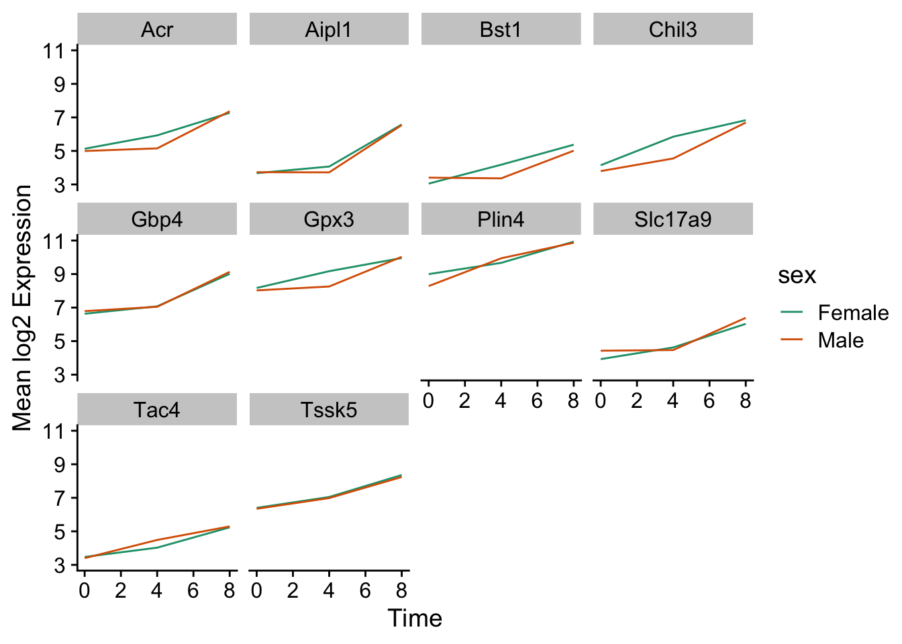

RNA-seq Data
Agenda
- Today’s lab
- RNA-Seq data visualization - this lab borrows heavily from a Carpentries incubator module on visualization.
RNA-Seq data
To start out with, fork the starter code and clone the repository to your local machine. Once we have done that, let’s explore the data provided:
# A tibble: 32,428 × 20
gene sample expre…¹ organ…² age sex infec…³ strain time tissue mouse
<chr> <chr> <dbl> <chr> <dbl> <chr> <chr> <chr> <dbl> <chr> <dbl>
1 Asl GSM254… 1170 Mus mu… 8 Fema… Influe… C57BL… 8 Cereb… 14
2 Apod GSM254… 36194 Mus mu… 8 Fema… Influe… C57BL… 8 Cereb… 14
3 Cyp2d22 GSM254… 4060 Mus mu… 8 Fema… Influe… C57BL… 8 Cereb… 14
4 Klk6 GSM254… 287 Mus mu… 8 Fema… Influe… C57BL… 8 Cereb… 14
5 Fcrls GSM254… 85 Mus mu… 8 Fema… Influe… C57BL… 8 Cereb… 14
6 Slc2a4 GSM254… 782 Mus mu… 8 Fema… Influe… C57BL… 8 Cereb… 14
7 Exd2 GSM254… 1619 Mus mu… 8 Fema… Influe… C57BL… 8 Cereb… 14
8 Gjc2 GSM254… 288 Mus mu… 8 Fema… Influe… C57BL… 8 Cereb… 14
9 Plp1 GSM254… 43217 Mus mu… 8 Fema… Influe… C57BL… 8 Cereb… 14
10 Gnb4 GSM254… 1071 Mus mu… 8 Fema… Influe… C57BL… 8 Cereb… 14
# … with 32,418 more rows, 9 more variables: ENTREZID <dbl>, product <chr>,
# ensembl_gene_id <chr>, external_synonym <chr>, chromosome_name <chr>,
# gene_biotype <chr>, phenotype_description <chr>,
# hsapiens_homolog_associated_gene_name <chr>, l2exp <dbl>, and abbreviated
# variable names ¹expression, ²organism, ³infectionTake a look at the distribution of the expression levels:

The data should be transformed. Transforming on the \(\log_{10}\) scale is easy in ggplot2,
but we often use a \(log_2\) scale when looking at expression data:
Building plots iteratively
We will now draw a scatter plot with two continuous variables and the geom_point() function. This graph will represent the \(\log_2\) fold changes of expression comparing time 8 versus time 0, and time 4 versus time 0. To this end, we first need to compute the means of the log-transformed expression values by gene and time, then the log fold changes by subtracting the mean log expressions between time 8 and time 0 and between time 4 and time 0.
We could also add color, but it begins to get a little messy with the large number of categories we have.
Over-plotting can be an issue with large datasets like this. One solution is using hexbin:geom_hex().
Box plots
We can use boxplots to visualize the distribution of gene expressions within each sample:
Adding points to box plots can give us a better understanding of the underlying distributions.
We could also use geom_violin to better see the distribution of points. Try coloring the points by time as well.
Line plots
Let’s calculate the mean expression per duration of the infection for the 10 genes having the highest log fold changes comparing time 8 versus time 0. We can do this either by coloring each gene or using facet_wrap.


Now we would like to split the line in each plot by the sex of the mice.

Let’s do something similar and create a plot that depicts how the average expression of each chromosome changes through the duration of infection.
The facet_wrap geometry extracts plots into an arbitrary number of dimensions to allow them to cleanly fit on one page. On the other hand, the facet_grid geometry allows you to explicitly specify how you want your plots to be arranged via formula notation (rows ~ columns; a . can be used as a placeholder that indicates only one row or column).
Let’s modify the previous plot to compare how the mean gene expression of males and females has changed through time: